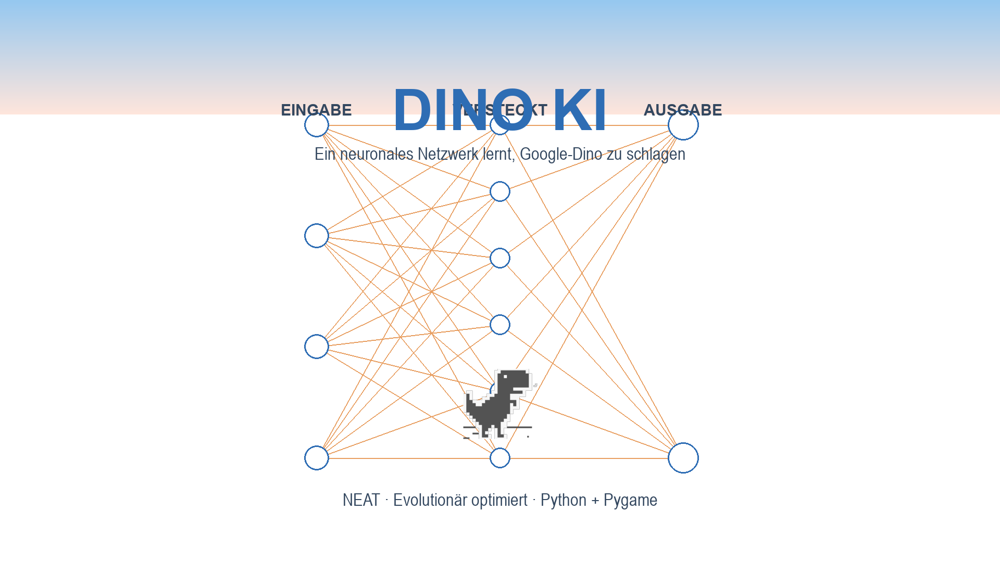
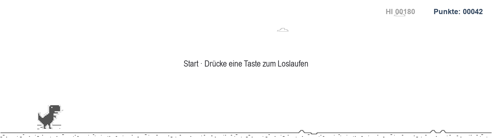
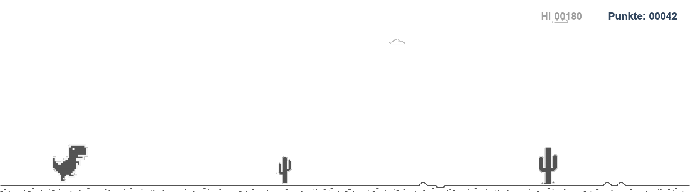
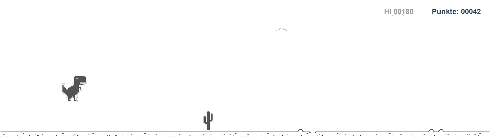
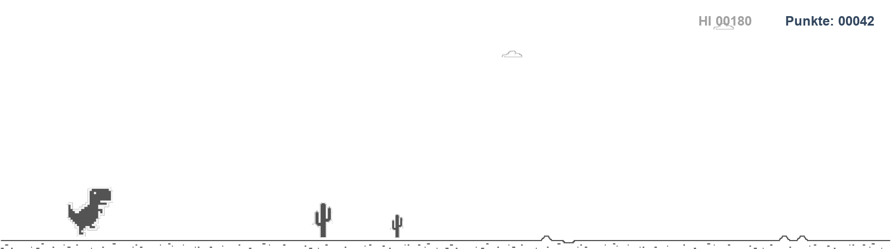
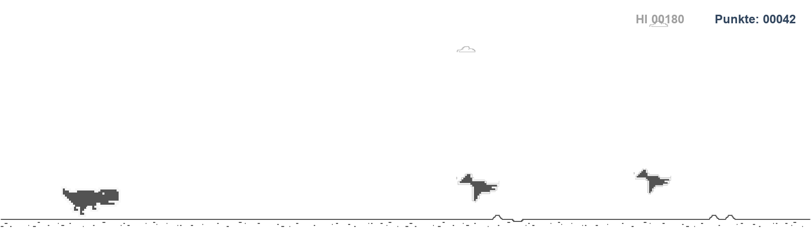
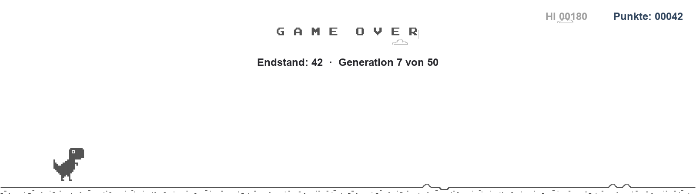
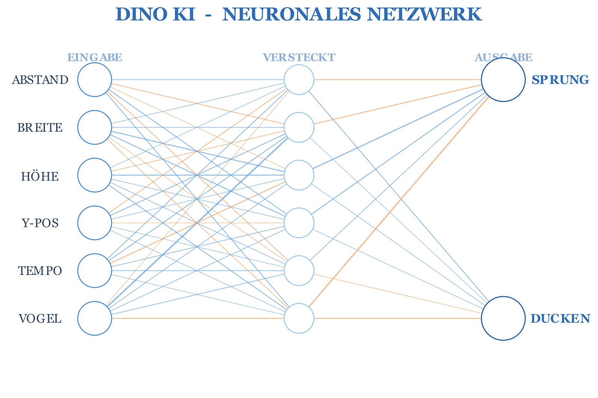
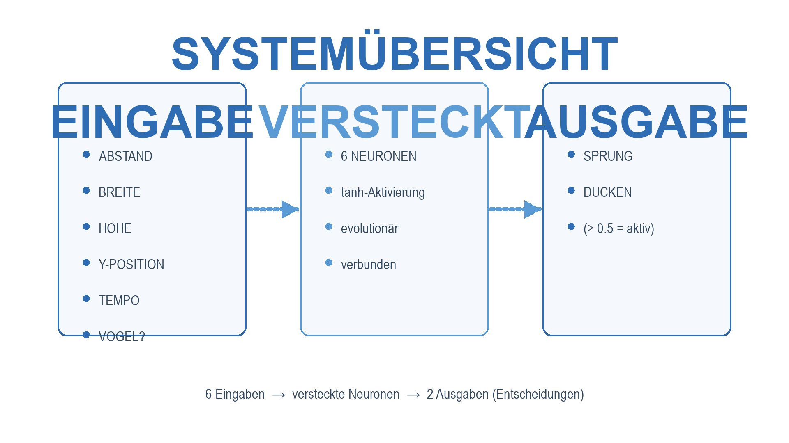

DINO KI
Wie ein neuronales Netzwerk von Grund auf lernt, das Google-Dino-Spiel selbstständig zu spielen – trainiert mit evolutionärem Algorithmus (NEAT), umgesetzt in Python.

1 · Überblick
Ziel des Projekts: Ein künstliches neuronales Netzwerk soll ohne jede Vorprogrammierung lernen, den Dino sicher über Kakteen springen und unter Vögeln hindurchducken zu lassen. Das Netz erhält nur minimale Sensordaten und trifft selbstständig Entscheidungen. Gelernt wird nicht durch Backpropagation, sondern durch evolutionäre Optimierung (NEAT): Viele Netzwerke spielen parallel, die besten überleben und mutieren zu einer neuen Generation.
Projekt-Steckbrief
- Name: DINO KI – Neuronales Netzwerk spielt Google-Dino
- Prinzip: Neuroevolution (NEAT-Algorithmus)
- Sprache: Python 3.14 (+ C++-Portierung)
- Laufzeit: komplett lokal, kein Internet nötig
Verwendete Bibliotheken
- pygame-ce 2.5.8 – Spiel, Fenster, Live-Visualisierung
- neat-python – neuro-evolutionäre Optimierung
- pygame-menu 4.5.2 – Hauptmenü
- Manim – statische Netzwerk-Diagramme (PNG)
2 · Das Spiel
Im klassischen Chrome-Dino-Spiel läuft ein Dino automatisch nach rechts. Der Spieler (hier: das neuronale Netzwerk) muss zwei Dinge können:
🦖 Laufen & Springen
Kakteen unterschiedlicher Größe erscheinen zufällig – der Dino muss sie rechtzeitig überspringen.
🦅 Ducken
Vögel fliegen in unterschiedlichen Höhen. Wenn ein Vogel zu tief fliegt, muss der Dino sich ducken statt zu springen.
💥 Game Over
Eine Kollision beendet den Versuch. Das aktuelle Netz bekommt seine Fitness und die nächste Generation startet.






Wie das Netzwerk das Spiel steuert
Jeder Dino gehört zu einem eigenen neuronalen Netz. In jedem Frame wird das Netz mit 6 Sensordaten gefüttert und liefert 2 Ausgaben. Die Regeln sind bewusst einfach:
DUCKEN-Ausgabe > 0.50 → Ducken
sonst → Weiterlaufen
3 · Eingabedaten des Netzwerks
Das Netzwerk erhält pro Frame 6 normalisierte Sensorwerte. Normalisierung bedeutet: Alle Werte liegen ungefähr zwischen 0 und 1, damit die Gewichte vergleichbar bleiben.
| # | Eingabe-Neuron | Berechnung | Bedeutung |
|---|---|---|---|
| i1 | ABSTAND | \(\frac{\text{Distanz zum Hindernis}}{\text{Fensterbreite}}\) | Wie weit ist das nächste Hindernis entfernt? |
| i2 | BREITE | \(\frac{\text{Breite des Hindernisses}}{100}\) | Wie breit ist das Hindernis? |
| i3 | HÖHE | \(\frac{\text{Höhe des Hindernisses}}{100}\) | Wie hoch ist das Hindernis? |
| i4 | Y-POSITION | \(\frac{\text{Dino-Position y}}{\text{Fensterhöhe}}\) | Befindet sich der Dino gerade in der Luft? |
| i5 | TEMPO | \(\frac{\text{Spielgeschwindigkeit}}{50}\) | Wie schnell bewegt sich die Welt? |
| i6 | VOGEL | \(1\) wenn Vogel, sonst \(0\) | Ist das nächste Hindernis ein fliegender Vogel? |
Zusammengefasst als Eingabe-Vektor \(\mathbf{x}\):
Die Ausgaben \(\mathbf{y} \in \mathbb{R}^{2}\) steuern den Dino:
4 · Aufbau des neuronalen Netzwerks
Die folgende Grafik zeigt das echte, aktuell trainierte Netzwerk (Stand: Start-Topologie). Blaue Kanten = positive Gewichte, orange Kanten = negative Gewichte. Lernende Netzwerke wachsen durch NEAT im Laufe der Generationen.

| Parameter | Wert |
|---|---|
| Anzahl Eingabe-Neuronen | 6 (ABSTAND, BREITE, HÖHE, Y-POS, TEMPO, VOGEL) |
| Hidden-Layer | Start: 6 Neuronen (NEAT kann Neuronen hinzufügen) |
| Anzahl Ausgabe-Neuronen | 2 (SPRUNG, DUCKEN) |
| Verbindungen (Start) | 48 (voll verbunden, Eingabe → Hidden) |
| Aktivierungsfunktion | tanh (Standard; Optionen: tanh, sigmoid, relu) |
| Aggregation | Summe: \(z = \sum_i w_i x_i + b\) |
| Bias | Start: Mittelwert 0, Standardabweichung 1; Bereich \(\pm 30\) |
| Gewichte | Start: Mittelwert 0, Standardabweichung 1; Bereich \(\pm 30\) |
| Feed-Forward | Ja (keine Rückkopplungen) |

5 · Das mathematische Modell
Jedes Neuron verarbeitet seine Eingaben in zwei Schritten: erst die gewichtete Summe, dann die Aktivierung.
Schritt 1 – Gewichtete Summe
Dabei ist \(w_{ji}\) das Gewicht der Verbindung von Neuron \(i\) zu Neuron \(j\), \(x_i\) die Eingabe und \(b_j\) der Bias (Schwellwert) des Neurons \(j\).
Konkretes Beispiel für ein Neuron mit drei Eingaben:
Schritt 2 – Aktivierung
Die Aktivierungsfunktion macht die Ausgabe nichtlinear – erst dadurch kann das Netz komplexe Muster lernen. Standard ist der Tangens hyperbolicus:
Weitere im Projekt verfügbare Aktivierungen:
Signalfluss durch das ganze Netz
\(\mathbf{z}^{(2)} = W^{(2)} \mathbf{a}^{(1)} + \mathbf{b}^{(2)}\) → \(\mathbf{y} = \tanh(\mathbf{z}^{(2)})\) → Entscheidung (SPRUNG / DUCKEN)
6 · Wie entsteht eine Entscheidung?
Ein konkretes Beispiel aus dem Spiel. Angenommen, das Netz liefert die folgende Situation:
Situation
- Abstand zum Kaktus: 87 px
- Kaktus-Höhe: 34 px
- Spieltempo: 5.0
Netzwerk-Berechnung
\(\mathbf{x} = (0.29,\, 0.40,\, 0.34,\, 0.0,\, 0.10,\, 0.0)\)
\(\mathbf{z} = W\mathbf{x} + \mathbf{b}\)
\(\mathbf{a} = \tanh(\mathbf{z})\)
Ausgabe & Aktion
\(\text{SPRUNG} = 0.91\)
\(\text{DUCKEN} = 0.02\)
→ SPRUNG > 0.5 ⇒ Der Dino springt!
7 · Training – Evolution statt Backpropagation
Das Projekt nutzt NEAT (NeuroEvolution of Augmenting Topologies): Netzwerke werden wie Lebewesen behandelt – sie „spielen", bekommen eine Fitness und mutieren. Es gibt kein klassisches „Lernen" mit Loss-Funktion, Optimizer oder Learning Rate.
Der Evolutionszyklus
BESTE AUSWÄHLEN (Elitismus) → REKOMBINATION & MUTATION → NEUE GENERATION → ↺
Individuen pro Population
Generationen im Training
Elite-Netze überleben unverändert
Überlebens-Schwelle je Spezies
NEAT-Besonderheit: die Topologie wächst
NEAT startet mit minimalen Netzen und fügt im Laufe der Evolution neue Neuronen und Verbindungen hinzu. Jedes Individuum hat dadurch eine eigene Architektur – die Netzwerk-Grafik im Spiel zeigt live die aktuelle Topologie des besten Individuums.
| Mutations-Parameter | Wert | Bedeutung |
|---|---|---|
| Gewicht-Mutieren | Rate 0.8 · Stärke 0.5 | Verbindungsgewichte zufällig verändern |
| Bias-Mutieren | Rate 0.7 · Stärke 0.5 | Schwellwerte der Neuronen verändern |
| Knoten hinzufügen | 0.2 | Neues Neuron in der Topologie |
| Knoten entfernen | 0.2 | Neuron löschen |
| Verbindung hinzufügen | 0.2 | Neue Kante zwischen Neuronen |
| Verbindung entfernen | 0.2 | Kante löschen |
| Aktivierung mutieren | 0.1 | z. B. tanh → sigmoid |
| Gewichts-Grenzen | \([-30, +30]\) | Stabilität der Optimierung |
Mutation mathematisch
Ein Gewicht \(w\) wird zufällig verrauscht – der Zufallsterm ist normalverteilt:
Dadurch erkundet die Population den Gewichtsraum um die guten Lösungen herum, während der Elitismus die bereits gefundene Leistung stabil hält.
8 · Die Fitness-Funktion
Die Fitness ist das „Lernziel" der Evolution – sie ist das einzige Kriterium, nach dem selektiert wird. Sie belohnt Überleben, bestraft Kollisionen und unnötiges Ducken:
+ 0.1 pro Frame
Jeder überlebte Frame erhöht die Fitness – je länger der Dino läuft, desto besser das Netz.
− 0.02 pro Ducken
Ducken ohne Vogel ist Zeitverschwendung – Bestrafung verhindert träges Dauert-Ducken.
− 1 pro Kollision
Ein Aufprall beendet den Versuch und kostet deutlich Fitness.
Zusätzlich erhält der sichtbare Spielpunktestand \(+0.25\) pro Frame – er steigt parallel zur Fitness und ist die „Zielzahl" des Trainings (Abbruch-Schwelle: 1000 Punkte).
Wichtig: Die Fitness misst eine komplette Lebenszeit – nicht einfach die Punktzahl. Ein Netz, das 10 Sekunden überlebt, ist besser als eines, das 100 Punkte erreicht und dann stirbt.
9 · Ergebnisse
Der Trainingsfortschritt wird in der Tabelle dokumentiert – die Werte stammen aus einem aktuellen Trainingslauf und werden bei jedem Lauf aktualisiert (beste Fitness je Generation).
| Generation | Beste Fitness | Ø Fitness | Beste Punkte | Bemerkung |
|---|---|---|---|---|
| 1 | — | — | — | erste zufällige Netze |
| 10 | — | — | — | erste Sprünge |
| 25 | — | — | — | zuverlässiges Überleben |
| 50 | — | — | — | finale Generation |
Training im Überblick
- Anzahl Generationen: 50
- Population: 50 Netze pro Generation
- Netze insgesamt: bis zu 2 500
- Fitness-Ziel: 1000 Punkte
Fragestellungen
- Was kann das Netz erkennen? → Hindernis-Distanz, -Größe, Vogel
- Welche Aktionen hat es gelernt? → rechtzeitig springen, ducken
- Wo liegen seine Fehler? → sehr nahe/kurze Hindernisse, Geschwindigkeitswechsel
10 · Code-Übersicht
Das komplette Projekt liegt lokal als Python-Quellcode vor. Die wichtigsten Dateien:
| Datei | Aufgabe |
|---|---|
main.py | Startpunkt des Programms |
dino_game.py | Spiel-Engine, Training, Echtzeit-Dashboard (Pygame) |
manim_render.py | Render-Pipeline: NEAT-Genom → Netzwerk-PNG + Live-Werte |
dino_net_scene.py | Manim-Szene für das Netzwerk-Diagramm (weiß/blau) |
neat-config.txt | Alle NEAT-Hyperparameter (Population, Mutationen, Aktivierung …) |
cpp_dino/ | C++-Portierung des Spiels |
bilder/ | Alle Diagramme und Screenshots dieser Dokumentation |
Wichtige NEAT-Konfiguration (Kernwerte)
fitness_threshold = 1000
activation_default = tanh
num_inputs = 6
num_hidden = 6
num_outputs = 2
weight_mutate_rate = 0.8
weight_mutate_power = 0.5
conn_add_prob = 0.2
node_add_prob = 0.2
population.run(eval_genomes, 50)
Erstellt als wissenschaftliche Projektdokumentation · Design: modern, minimal, Weiß & Blau · Alle Bilder wurden mit den echten Spieldaten und Assets des Projekts erzeugt.
11 · Präsentation & Erklärungen
Die komplette Präsentation im weiß-blauen Design – als bearbeitbares PowerPoint und als PDF – plus zwei Begleit-PDFs, mit denen sich jede Formel und jede Folie erklären lässt:
Präsentation (PPTX)
15 Folien, direkt bearbeitbar:
DINO_KI_Praesentation.pptx
Präsentation (PDF)
Dieselben Folien als PDF:
DINO_KI_Praesentation.pdf
Formeln erklärt (PDF)
Alle Formeln – lesen, rechnen, erklären:
DINO_KI_Formeln_erklaert.pdf
Sprechzettel (PDF)
Jede Folie in 30 Sekunden erklärbar:
DINO_KI_Sprechzettel.pdf
Formeln-Erklärungen (Web)
Alle Formeln mit Papier-Rechenanleitung, direkt im Browser:
formeln-erklaert.html
Direkt über GitHub Pages verfügbar – ohne Anmeldung. Die PDFs enthalten dieselben Formeln wie diese Seite.